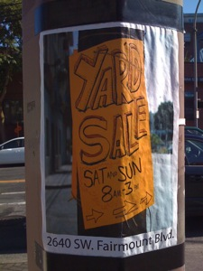
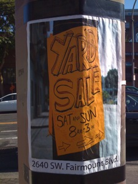
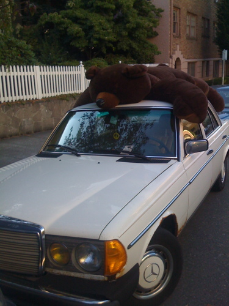
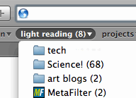
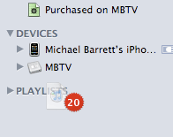

This is a poster of a yard sale sign. Is it advertising the yard sale, or the sign? Hmmm.

This is a poster of a yard sale sign. Is it advertising the yard sale, or the sign? Hmmm.
http://ap.google.com/article/ALeqM5jUNOHxDTQoehoT3FAda6jBvSN4uQD92HNJO00
Julia Child Was A Spy!
(I love her)
I was heading upstairs from the laundry room after putting some clothes in. I was waiting for the elevator.
I looked through the front-door window and saw what appeared to be a man, lying on his back on the sidewalk.
I looked again. Yep. Definitely a man. Yep. Definitely not moving.
I went out and asked if he was OK. He didn’t move. I asked again…no movement.
Ah. There it is. He is breathing. Good.
I called 911 and as I was waiting there, talking with the operator, that’s when people actually decided to pause.
Some concerned neighbors, on their way in, asked about him and waited with me.
At about this time, a line of five over-dressed party boys streamed out of the apartment and didn’t even pause.
They moved through the crowd (like ambulance drivers?) and didn’t even take off their sunglasses for a peek.
The firemen arrive (first responders) arrive and a big husky guy hops out of the truck and yells “Francisco!”
Apparently they have met before.
He rolls over to Francisco and starts talking to him. “Que onda, Francisco?” (what’s happening) The other responders kind of roll their eyes. An older guy says “I’ll cancel the ambulance.”
Eventually they get him to sit up.
I checked on the scene from my balcony a few minutes later, they had called a PDX cop in. They handcuffed him and searched his backpack and took him away. Presumably to sober up downtown.
How was your afternoon? I got most of my laundry done.

Please enjoy.
I wrote previously that I would write about a handy trick in JavaScript known as a “lexical closure”.
This article has a great definition of a lexical closure: http://www.brockman.se/writing/method-references.html.utf8.
I quote…
Essentially, a closure, or lexical closure, is a function f coupled with a snapshot of its lexical environment (i.e., the non-local variable bindings used in its body).
Hence, closing over some variable v means creating a closure that refers to v.
Strictly, the term “closure” can be used to describe any function that refers to one or more variables in an outer lexical scope. This is a rather broad definition that includes, for example, all functions that refer to global variables (such as document, alert, String, and so on).
This can be very handy if you want, say, an event handling method to interact with both the HTML element the handler is attached to, and the parent object to which the method belongs. Huh? Exactly.
Let’s say you want to write a JavaScript object which encapsulates all of your form validation and preprocessing logic. Let’s say you want this object definition to include event handlers which validate form elements. After validation, you want the form elements to be visually updated to indicate if the value is correctly entered or not, and update the JS Object with any validation error messages.
First let’s write up some simple event handling utilities.
// creates a function which
// executes an event handling method
// in the scope of a given object
function getBoundEventHandler(obj,method)
{
return function(e)
{
e = e || window.event;
method.call(obj,e);
}
}
// cross-browser event-adder-on
function observeEvent(strEvent,obj,handle)
{
if (window.addEventListener)
{
// W3C
obj.addEventListener(strEvent,handle,false);
}
else
{
// Dirty, dirty MS Internet Explorer
obj.attachEvent("on"+strEvent,handle);
}
}
Now let’s define a simple form handling object, with a simple means to report errors, and validate an alpha-numeric field.
First the constructor function:
function Formbois(strFormId)
{
var that = this; // Hot Lexical Closure Action!!
var this.errors = new Array();
var this.fieldKeyHandler = function(e)
{
// with the handler function bound to the target element,
// "this" refers to the form element
// "that" refers to the Formbois instance
if (!that.validateAlphaNum(this.value))
{
// add an error to the errors array
that.errors.push("Please enter an alpha-numeric value");
// mark the form element having an error
this.className += " error";
}
else
{
this.className += " valid";
}
}
}
Based upon what I mentioned in my previous post, the private variable “that” is in the same lexical scope as the function “fieldKeyHandler”. That means when I assign that method to a form element, the variable “that” will refer to the instance of the object “Formbois” allowing me to access the public method “validateAlphaNum” and the “errors” array. Neat.
Let’s define the validator and the error reporter for a complete example:
Formbois.prototype.validateAlphaNum = function(value)
{
return value.match(/[a-z][A-z][0-9]/))
}
Formbois.prototype.alertErrors = function()
{
alert(this.errors.join("\n"));
}
Neither of these methods have access to the private variable “that”, but that’s OK because they don’t need it. The method “validateAlphaNum” could even be a static function assigned like so:
Formbois.validateAlphaNum = function(value) { /*[.code goes here.]*/ }
To put it all together, we instantiate the “Formbois” object and assign our event handler.
// create form object
var f = new Formbois("happyFunForm");
// get form element
var elm = document.getElementById("someTextFieldId");
// assign event handler to "onkeyup" event
observeEvent(
"keyup",
elm,
getBoundEventHandler(elm,f.fieldKeyHandler)
);
Obviously this is a very simple example, but hopefully it will inspire someone to write some JavaScript which doesn’t suck.
I’ve been working out some methods of making uniquely namespaced JavaScript objects.
I’m trying to handle a situation where there could be multiple instances of the same object or functions on the same page with the same name. The idea is to prevent one function, variable, or object accidentally writing over another because they have the same name.
I settled on a factory pattern which accepts a namespace as a parameter, followed by an array or object of parameters.
I start with a factory function which does some simple checking for a namespace, and then calls a constructor function, assigning the resulting object to a global property of the window object.
This code assumes that “namespace” is a unique value.
function myObjFactory(namespace,objParameters)
{
if (!namespace)
{
throw new Error("Null Parameter 'namespace'");
}
window[namespace] = new MyObj(objParameters);
}
So in JavaScript the way to create a custom object is to define a function, and call it with the “new” keyword, as above. Your function can accept any parameters you wish. These parameters can be used to set default values in your object, or operated on by internal functions.
In JavaScript everything is an object, including functions. Functions have a public property “caller” which holds a reference to the function or object which called the function. So in my example below, if I try to call my constructor function from anywhere but the function “myObjFactory” it will throw an error. This little trick makes it impossible to instantiate MyObj without myObjFactory, ensuring my design pattern doesn’t unravel.
function MyObj(objParameters)
{
if (MyObj.caller != myObjFactory)
{
throw new Error("No public constructor for MyObj.
Use myObjFactory");
}
var shy = "private value";
this.params = objParameters;
this.arbitraryHandler = function(e) { return e;}
this.publicFunction = function() { alert(shy);}
}
Notice that some members of this function are prefixed by “this”. Those values become public properties of the object once it’s instantiate.
The variable “shy” is scoped within MyObj, so it functions as a private variable. The functions “arbitraryHandler” and “publicFunction” can both access “shy” but shy cannot be accessed from outside the function, e.g. the following would throw an error:
//instance of MyObj from the window object;
var moe = window[namespace]
alert(moe.shy); // FAIL - private variable.
Super. Now I have public and private members in JavaScript. And they said it couldn’t be done!
The OO JavaScript convention is to write a lean constructor object, and then append public methods or properties to the function’s prototype property. Like so:
MyObj.prototype.newProperty = "shiny";
MyObj.prototype.newMethod = function(parm) {alert(parm);}
Anything you add to an object’s prototype is available to all instances of that object.
But here’s where I got off the rails. Remember my private member “shy”? The variable “shy” isn’t a private member in the same way that a member is private in a classical language like Java or C#.
It only acts private because it available to the local scope of the constructor function. So when I tried something like this, it fails:
MyObj.prototype.getShy = function() {alert(shy);} //FAIL
Doh. What went wrong?
All members of objects in JavaScript are public, any variables tucked away within a function are local to that function. When I added a method to the objects prototype, the local scope of the function is not available (and to be double plus specific, I added a method to the object’s prototype which in reality is the object which my object is based upon or inherits from; Object in this case; so I was really adding a public method to an entirely different object)
To summarize, if you’re writing OO JavaScript, and you want to store some private values accessible by public methods – place both your private values and your public methods in the same scope, i.e. the constructor function.
This also opens up a neat trick called a ‘lexical closure’ which can be very handy when writing complex event handlers or callback functions — which I’ll write about next time.
Just when I thought “A List Apart” had become a useless dried up husk of RoR wankers, they turn around and publish this gem of an article: Getting Out of Binding Situations in JavaScript
I’ve read various descriptions of ‘binding’ in JavaScript before, but this is probably the most clear explanation I’ve seen. As a bonus, someone in the comments linked to this fine, incredibly thorough, advanced discussion of binding: Object-Oriented Event Listening through Partial Application in JavaScript.
You can tell by the title that this article is not for the faint of heart. (hint: start with the ALA article)
37 Signlas is dropping support for Internet Explorer 6. It must be nice to fire your customers from time to time.
The missus and spent a lovely Saturday at Cannon Beach, OR. We had it all. Blankets, towels, trashy magazines to read, hot dogs, marshmallows. Except Ketchup. And Sunscreen. Ouch.
The first anniversary is fast approaching. We’re taking the train up to Seattle to stay in a kitschy old hotel and eat at a swanky tucked away restaurant rumored to have a trapeze act and a burlesque show. Ooh La La.
I spent part of the Fourth in a friend’s back yard grilling various things and eating fancy cheese. We had a Dutchman (pictured) and a Brit in attendance (along with various liberal Portlandy types). Viva La Independencia.
I’ve caved into the pressure and signed up on the Facebook. And while I’m at it, I’m on the LinkedIn too. Damn kids. And their internets.
I’ve been using the Twitter lately also. I’m not sure how I feel about it. Like any good RoR app: it’s horribly unreliable; it’s purpose is rather unclear; and all the cool kids are doing it. Twitter claims to be a “micro blogging” application, but people use it as an ad-hoc messaging system or bulletin board. It is useful for keeping up with prolific bloggers. The Mars Phoenix program has been posting updates as well, which is fairly neato. However, I’m not convinced it’s worth my time to post anything.
On the Metafilter there is a lengthy thread discussing the new Pixar flick Wall*E (and the critical response thereof). One comment is an incredible story about how a girl, a video, and the resulting wrap party in San Francisco. The comment opens with “Here’s a true story about how awesome Pixar is.” And it’s perfectly accurate. The comment is linked here:
Wow-e: Malthusian Fear Mongering Can Be Annoying | MetaFilter
The comment includes links to the video, and some great pics from the event.
Go and give this a read, and bask in the warm glowy feeling that the world still has nice people in it.
Back when tax returns came out I did myself a little favor and upgraded to OS X 10.5 and purchased an AppleTV (Thanks institution of marriage!)
The AppleTV is a great toy. I purchased the smaller one (hard drive). Since the appliance connects to 5 computers on your home network, there’s really no reason to have a giant hard drive. Any media you want to access gets streamed right over.
Renting movies and buying TV shows on demand is nice. And yes, I’m fully aware that I payed $299 for the privilege of spending more money from the convenience of my couch. I hate cable providers with a fiery burning passion. I am happy to give money to Netflix and iTunes. The on-demand model is perfect for me, because I want what I want when I want it and that’s all I want. And, I’m happy to pay for that. Comcast and their dirty brethren have yet to understand that. They are still trying to float a “you’ll take what we give you on our terms” business model. My magic 8-ball says that strategy is doomed in the near-ish future.
The more I think about it, the subscription entertainment model is pretty flawed. If you have a job, and you’re not a vampire, there’s only so much time in the day you could possibly be watching television. When I get home from my day job I like to do things like fix up a martini, cook dinner, seduce my wife, and work on my little projects. Sometimes we like to sit and watch a show or two. It’s just dumb to pay a large monthly fee for junk piped into your home that you aren’t even home to watch. And I don’t like TV that much anyway. The only exceptions I can think of are news junkies (barf – cable news is trash) and sports fans. (In fact one of my friends back east signs up for cable just long enough each year to watch the ACC Tournament.)
But, I digress.
The surprising thing about the AppleTV is how much I use it as a stereo. I haven’t had a ‘real’ stereo system for years. I either listen to my iPod/iPhone or plug speakers into the computer.
Why, no. I’m not an audiophile. I like music.
Plugged into my TV’s audio system the sound is good, and it’s really cool to see a giant picture of the album cover and the track info swooshing around on the screen.
I’m liking OS 10.5, Leaping Leopard, quite a bit. I bought it for one feature only and that’s Time Machine. I had cobbled together an Automater Script with rsync to do a weekly back up of my hard drive to an external drive and it worked OK, but Time Machine beats it simply because it’s automated and hides in the background.
I have found some odd behavior in a few places. The RSS feed counters in Safari (which indicate how many unread articles are waiting for you in a news feed) gets all out of whack sometimes. You can view an article, and the counter will not update. Odd. This worked fine in previous versions.
Also, there is an annoying inconsistency in iTunes’ behavior. For example, in Mail, if you click and drag a message or selection of messages to a closed folder it pops open so you can drop items in the folder below. Same is true in the Finder. iTunes doesn’t do this however. If you want to drag items into a playlist, and your playlist list is closed, iTunes just sits there. Mocking you.